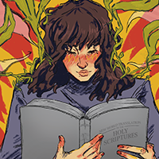
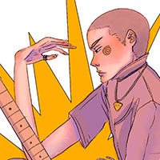

Here you will find what you need to know about Ariana. Thank you for stopping by!
Ariana Hernandez is a Digital Media student at Seminole State college. She has created many digital and traditional illustrations over the years and has spent most of her time studying artwork. In the past couple of years, she has begun to be very interested in graphic design and UI, as well as game development. She intends to find work in the graphic design and web design fields. Ariana has always had an interest in creative pursuits and finds joy in learning new techniques and skills. Her current creative hobbies include teaching herself embroidery and guitar.
Her Work |
|||
|---|---|---|---|
Vector |
|||
Artwork |
  | ||